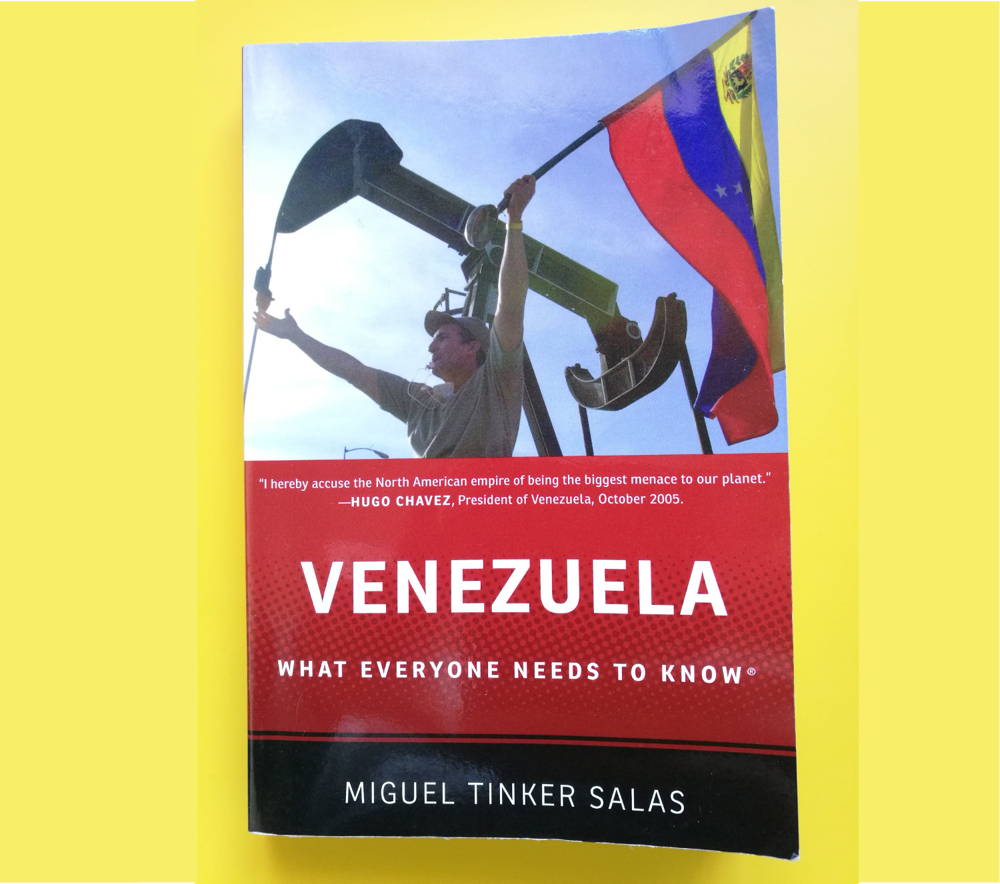

I have been searching around for a book about Venezuela, the home country of my partner. My knowledge of Venezuela before I met her was as follows:
My partner has, of course, filled me in on a lot more since then. Still, I thought I should sit down and swot up on the country’s past, hoping maybe it would explain how it ended up where it is today. Aware of my yearning for a-learning, my partner bought me for my birthday ‘Venezuela: What everyone needs to know ‘ by Miguel Tinker Salas. A little tipsy home from dinner, I sat down with this short (218 pages) book, the cover all socialist red and fluttering flags.
The book is divided into three parts: one covering the history of Venezuela from the colonial to the modern era, a second covering the oil boom and 20th century Venezuela up to the rise of Chávez, and a third covering the period under Chávez and his buffoonish successor Nicolas Maduro. I found part one (Venezuela before oil) to be an interesting and informative meander through the stories and legends surrounding the nation’s founding fathers (and mothers), with much focus on the structure of the colonial economy. As we’ll see below, a similar level of economic criticism of the Chávez era is notable by its absence.
Part two begins with the discovery of that lubricator of economies, that liquid gold…that black curse…oil. Throughout Venezuela’s turbulent 20th century history, oil runs thickly and deeply. Tinker notes that oil brought the wealth that allowed the country early access to the fruits of American modernity: electricity, refrigeration, Hollywood, Cadillacs and baseball. For much of the 20th century, Venezuela was led by military strongmen and presidents selected by a self-serving senate in a constant struggle for a cut of the oil boom’s riches. Western-style democracy arrived in the second half of the century, although corruption and nepotism continued to plague the country. Tinker goes on to argue that although oil enriched a lucky class of white, upper and middle class Venezuelans, this never seeped down to improve the lot of the lower classes, much of whom are of mixed European-indigenous-African descent. Tinker claims that inequality brought principally by the exploitative practices of foreign oil companies and a nationalised but arms-length oil enterprise called PdVSA created fertile ground for the rise of a socialist movement in Venezuela.
From the beginning of the book, the author's left-wing views are apparent, although I don't think his treatment of the history up to the era of Chávez was partisan to the point of obscuring the truth. Unfortunately, the same cannot be said for part three of the book.
Tinker’s treats the Chávez/Maduro period in the final eighty pages of the book. His natural support for the “leftist” and “progressive” government of Chávez/Maduro leads to a real deterioration in the quality and objectivity of the analysis in this section. I expected to read about the economic mismanagement, the spiralling inflation, the souring of foreign relations (except for making friends with such “progressive” forces as Iran, Libya and Russia), the descent into lawlessness, the state-organised corruption and the violent repression by the security forces. Instead I read about a "progressive" regime that protects the poor and does battle against hostile national and international forces.
In particular, Tinker focussed on the misiones: government programmes to improve the life of the poor. The programmes aim to bring healthcare, education, housing and electoral participation to the poorest neighbourhoods. Of course, this sounds like an honourable thing to do. However, Tinker doesn’t discuss the ways in which these programmes have been abused by party and government officials as ways to indoctrinate children (be re-writing history books), intimidate voters (by arming local mobs called “colectivos”), launder money, or secure new homes for their family members or business connections. Much of the contracts for work on the misiones are alleged to be at inflated values, with officials lining their pockets with "commission". He also doesn’t discuss whether such programmes were effective or affordable in the long-term given falling government non-oil revenues. The reality is that Venezuela relied on high oil prices to fund lavish social programmes without creating the environment for the non-oil economy to flourish. Despite relying so heavily on its oil revenues, the Chávez/Maduro government oversaw new levels of corruption and mismanagement within PdVSA. Oil production is at its lowest in three decades despite massive untapped reserves. All this meant that when the oil price collapsed in 2014 economic disaster was inevitable.
I recognise this book was written around 2014, when it was just about possible for the most idealogical of Western "progressive" thinkers to still see the positive side of the Bolivarian revolution. However, as someone whose family has been directly affected, I found it incredible that the book makes no mention of the damage caused by the Chavistas' attempt at a planned economy. The author does not claim to be an economist, but I would have thought it obvious that a government bent on appropriating private business and property is disastrous for the economy. Who would invest in a business that could be snatched away at any moment? There is discussion of the currency controls of the pre-Chávez era, but little mention of it under Chávez and Maduro, nor the hyperinflation (although the worst of that has happened since 2014). The author is either avoiding the facts or else hasn't understood that a dysfunctional home economy coupled with an inability to import goods due to currency controls is by far the most important cause of the shortages of staple goods. Communism has been shown not to work, time and time again. Miguel Tinker Salas does not seem to have got the memo.
The suggestion of "international political pressures" being in part responsible for shortages feels disingenuous, as to my knowledge the only sanctions in place at the time Tinker wrote the book were on the sale of arms (due to Venezuela’s failure to prevent drugs trafficking) and against individual government officials involved in the violent suppression of opposition protests in 2014. However, Tinker’s point-of-view fits with Chávista rhetoric of an economic war being waged against Venezuela by the capitalist American pigs.
What is most infuriating is that the author is a Venezuelan living in the US; he's one of the lucky ones who got out. He derides a middle class who he alleges oppose the government only for fear of losing their positions of status in society. As a member of the American middle-class, one wonders about Tinker's own position of status . Tinker has access to the decadent wonders of the modern world, principally clean water, supermarkets overflowing with food, reliable electricity, functioning transport infrastructure, safe streets and public spaces, great schools, hospitals with hi-tech equipment, and so on. Academics like Tinker always seem to take such things for granted when writing from their cosy college campus about “progressive”, socialist governments in the developing world.
My partner’s middle-class family spend up to eight hours in a line to buy flour and oil. Often there is none left once they make it to the front. When on holiday in Spain or Portugal, we do tours of pharmacies to buy the medicine that keeps my partner’s father alive (in the UK a doctor’s prescription is usually required). Medicine is now almost impossible to come by in Venezuela. And I’m not talking some weird, specialist drug; unbelievably, we even have to send boxes of aspirin. And when I say send, I mean find a friend who is travelling back to Venezuela, because the postal service is highly unreliable (many allege customs officials take parcels to sell on the black market). I say to you, Miguel Tinker Salas, have you tried living in Venezuela recently? What planet are you living on when you suggest that life in Venezuela has improved under Chávismo? Yes, the social programs undoubtedly raised, temporarily, the standard of living of the country’s poorest. But the approach was unsustainable. Thanks to Chávez and his successors, I had to watch my partner cry at the sight of someone we know arriving in Spain from Venezuela: they were incredibly thin, having eaten once-a-day for the last two years, mostly just pasta and margarine, occasionally an egg. And this was before we discovered they had contracted an infection from contaminated food. In a way, they were one of the lucky ones. Many now find their food in the refuse sacks outside homes and businesses. As recently as July 2016, Tinker claimed that there is no crisis in Venezuela, that no one is starving.
Tinker paints a picture of a government opposition out to sabotage Chavez’s plans to raise the lower classes out of poverty. He downplays opposition protests about the repression of the media. I mean yeah, OK, Venezuela lags behind Myanmar, Mali and Afghanistan in the Press Freedom Index, but it’s not that bad, is it? Again, the worst of what has happened has taken place since the publishing of the book, but the writing was already on the wall. We’re talking about the government shutting down TV channels, both national such as RCTV and international such as CNN, and censorship of all major news outlets in the country. The only reliable news from inside Venezuela now comes via social media.
It’s hard to know where to start or stop when describing how bad the situation is in Venezuela. We simply can’t grasp it as pampered westerners. Can you imagine your government arresting opposition politicians , and even kidnapping and imprisoning the mayor of your capital city?
I don’t mean for this review to be a personal attack on Miguel Tinker Salas. I am just frustrated that on the subject of Venezuela he seems to be one of the main voices of authority in the developed world. In many ways, his views are common. It’s easy to find socialist writers and politicians in the UK who support the Venezuelan regime. Frighteningly, the leader of the opposition Labour party is one of them (try this and this). Such ideologues need a fresh dose of reality: capitalism has brought billions of people out of poverty in a way socialist China and Russia never could. Yes, capitalism without restraints is harmful, but the way to solve the problem is to forcefully legislate in a way that both encourages business and protects workers. Yes, we need social programs, but we also need entrepreneurs. The path to populist socialism always ends at the same place: the bread line.
*I obviously found this to be true.
© 2018 DAVID WATSON ALL RIGHTS RESERVED